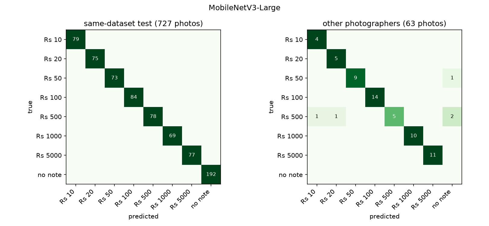
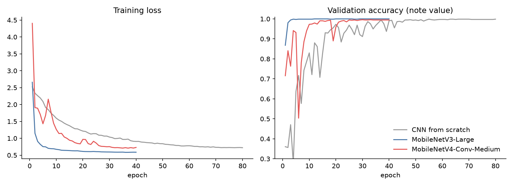

Cash is still how most everyday purchases in Pakistan are paid. The seven notes in circulation (Rs 10 to Rs 5,000) differ only modestly in size, so a blind person usually has to ask someone and trust the answer. Commercial apps exist for some currencies, but an assistant for Pakistani notes should work on cheap phones, speak Urdu, and need no installation. The cost of errors is asymmetric: silence just means "move the note and try again", while a wrong value can cost real money.
Contributions. (1) A working Urdu-speaking reader that runs in any phone browser. (2) A measurement of hidden duplication in public currency datasets, and an evaluation that goes beyond the training dataset: other photographers and our own photos. (3) A speaking rule that trades coverage for safety, calibrated without touching test data. (4) An accuracy-versus-speed comparison of three architectures for phones.
Training data. The Pakistan Image Currency Dataset [7] (CC0) has 3,611 phone photos of the 2005–2008 note series, each value front and back, many folded, partly visible, or in a hand, plus 280 "other" photos. We add 1,000 Imagenette photos [6] (100 per class) to the "no note" class so the model learns to stay silent.
Duplicate check. We computed a 64-bit perceptual hash [9] of every photo and joined photos within 8 bits of each other. Inside the training dataset, near-copies are kept on the same side of the 70 / 15 / 15 per-class split (seed 42). Against the Roboflow currency dataset [8], which we intended as an independent test, 339 of 402 single-note test photos turned out to be near-copies of training photos; only 63 remain as a genuine external test. Without this check that external test would have reported near-perfect accuracy.
Our own photos. Being collected: about 300 photos of our own notes under real conditions, used only for testing.
| Split | Photos |
|---|---|
| Train | 3,429 |
| Validation | 735 |
| Same-dataset test | 727 |
| External test (other photographers) | 63 |
| Our own photos | – |
Each model sees the whole camera frame squeezed to 224 × 224 (the same preprocessing in training, predict.py and the browser) and outputs 15 class probabilities; front and back are separate classes because they look nothing alike, and the app adds them per value. Augmentation is designed around how blind users actually hold notes: any rotation, too close or too far, half the note out of frame, fingers over it, dim or yellow light, motion blur. Mirror flips are excluded because the camera never sees a mirrored note.
| Setting | Value |
|---|---|
| Input | RGB photo, whole frame squeezed to 224 × 224, values in [0, 1] (cached at 320 px for augmentation) |
| Classes | 15 = 7 values × front/back + none |
| Optimiser | AdamW, weight decay 0.05, label smoothing 0.1 |
| Learning rate | 1e-3 (MobileNets), 2e-3 (scratch); 5% warm-up then cosine |
| Epochs | 40 (MobileNets), 80 (scratch); best epoch by validation value accuracy |
| Batch | 64, bfloat16 mixed precision, 1 × NVIDIA L4 (Colab) |
| Augmentation (GPU) | rotation ±180°, zoom 0.85–1.9×, stretch 0.8–1.25, shift ±18%, 0–2 finger/shadow patches, brightness/contrast ±35%, gamma ±30%, saturation ±40%, colour cast ±8%, noise, blur (p = 0.3); no mirror flips |
| Speaking threshold | lowest threshold with <= 0.2% (1 in 500) wrong-value rate on 4 augmented passes of the validation set |
| Model | Params | ONNX | CPU ms | Same-dataset test | Other photographers | Own photos | Threshold |
|---|---|---|---|---|---|---|---|
| CNN from scratch | 2.36M | 9.4 MB | 88 | 99.6% | 82.5% | – | 0.76 |
| MobileNetV3-Large (deployed) | 4.22M | 16.9 MB | 15 | 100.0% | 92.1% | – | 0.68 |
| MobileNetV4-Conv-Medium | 8.45M | 33.7 MB | 37 | 99.9% | 92.1% | – | 0.70 |
All models are near-perfect on unseen photos from the training dataset, which mostly shows how similar those photos are to each other. The informative columns are the other two: on photos by other people the deployed model drops by 7.9 points, and the scratch CNN, which matched the pretrained models on the same-dataset test, falls to 82.5%. ImageNet pretraining buys robustness that the in-dataset test cannot show. MobileNetV3-Large runs in 15 ms per photo on a 2-core CPU, MobileNetV4-Conv-Medium in 37 ms (2.5× slower, 2.0× the parameters). The test on our own photos was still being collected when this version was written.
| Test set | Photos | Value accuracy | Says wrong value | Speaks on note photos | Correct when speaking | Speaks with no note |
|---|---|---|---|---|---|---|
| Same-dataset test | 727 | 100.0% | 0.0% | 99.4% | 100.0% | 0.0% |
| Other photographers | 63 | 92.1% | 0.0% | 87.3% | 100.0% | – |
| Value | Same-dataset test | Other photographers |
|---|---|---|
| Rs 10 | 100.0% | 100.0% |
| Rs 20 | 100.0% | 100.0% |
| Rs 50 | 100.0% | 90.0% |
| Rs 100 | 100.0% | 100.0% |
| Rs 500 | 100.0% | 55.6% |
| Rs 1000 | 100.0% | 100.0% |
| Rs 5000 | 100.0% | 100.0% |
| no note | 100.0% | – |


The deployed model is exported to ONNX (opset 17, 16.9 MB, softmax included) and TorchScript. The website runs it with ONNX Runtime Web on the phone, on the live rear camera, about four frames a second; the speech is pre-recorded with neural Urdu and English voices so it works even on phones without Urdu text-to-speech, and Android phones also vibrate a code (1–4 short pulses for Rs 10–100, 1–3 long for Rs 500–5,000). Results are announced in an ARIA live region so screen readers (TalkBack, VoiceOver) read them too. The repository holds code, splits, own photos, all weights with SHA-256 hashes in model_card.json, the executed notebook, and a GitHub Actions test.
A phone-sized network reads Pakistani banknotes aloud in Urdu, offline, in any browser. The headline in-dataset accuracy is close to perfect, but the honest numbers come from photos the dataset never saw, and a speaking rule tuned for safety matters as much as raw accuracy. Next: photos of worn notes, the new note series, counting several notes in one frame, and a field test with blind users.